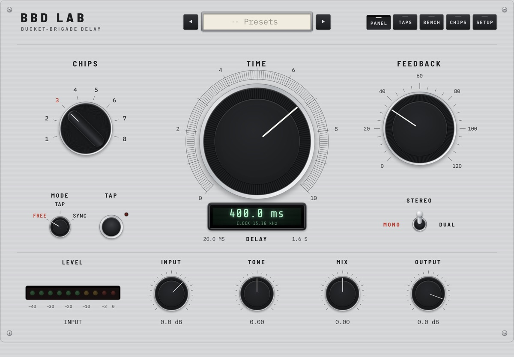

In the lab
BBD Lab
A bucket-brigade delay for iPad, simulated chip by chip. Your sound is handed from bucket to bucket one clock tick at a time, the way the classic analog delays did it, and the delay is the clock. In development now.

The idea
A delay, bucket by bucket
The classic analog delays passed audio along a chain of tiny capacitors, a bucket brigade. BBD Lab simulates that chain one transfer at a time, instead of painting an analog sound on top of a digital delay.
The delay is the clock
Slow the clock and the echoes grow longer and darker, because the filters that keep the clock out of the audio close along with it. The hiss and the faint whine come from the circuit, right where the hardware keeps them.
Be the designer
An analog pedal gives you the circuit its designer chose. Here the bench is open: change the circuit and hear what every part of it does.
In short
Coming to iPad
BBD Lab is in testing now, as an audio unit for your favourite hosts and as a standalone app. The details are still moving, so this page stays brief until release.
Updates
Get notified
BBD Lab is in testing. Drop a line to hear when it lands, or with questions and feedback: always welcome.